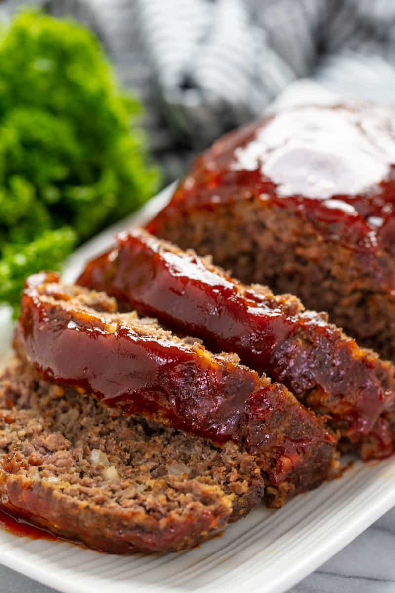

Mamma's Meatloaf

Description
Experience the taste of home with momma's meatloaf.
Master this classic dinner recipe,
perfect it with our tips, and enjoy every bite!
Ingredients
- 2 pounds lean ground beef
- 1/2 white onion , diced (about 1/2 cup)
- 1 cup dried bread crumbs
- 1/2 cup milk (whole, 2%, 1%, or skim)
- 1 large egg
- 2 tablespoons Worcestershire sauce
- 1 teaspoon salt
- 1 teaspoon dried basil
- 1 teaspoon ground oregano
- 1/2 teaspoon black pepper
- 1/2 teaspoon crushed red pepper flakes
for the glaze:
- 1/2 cup ketchup
- 2 tablespoons brown sugar
- 1 tablespoon Worcestershire sauce
Steps
- Preheat the oven to 350°F. Lightly grease a 9x13-inch pan.
- In a large mixing bowl, knead together the ground beef,
onion, bread crumbs,
milk, egg, Worcestershire sauce,
salt, basil, oregano, pepper, and red pepper flakes.
- Shape the meat mixture into a loaf
and place it in the prepared pan.
- Bake in the preheated oven for 45 minutes.
- In a small bowl, whisk together the ketchup, brown sugar,
and Worcestershire
to prepare the glaze.
- Brush the glaze over the hot meatloaf.
- Increase the oven temperature to 400°F and bake
for an additional 15 minutes or until
the meatloaf
reaches an internal temperature of 160°F.
Home